Iris — AI-guided waste sorting and recycling companion
Iris turns everyday recycling decisions into a guided habit: photograph an item, learn its category and step-by-step disposal instructions across six languages, find nearby drop-off centers, and donate reusable items to neighbors. Latest turn ↓
Sprint 6 complete: In-memory screen pose suite, multi-session RLS ledger driver, 10 live Playwright verification journeys, and resolved component documentation
Sprint 6 (Turns 21–24) completes the 6-sprint, 24-turn conversion of guis/iris and guis/web to Pronto under apps/iris: mounted screen poses and pure Jessie handler folds in tests/screens.test.ts (Turn 21), multi-session guest RLS, forged-write refusal, synchronous classification/translation triggers, and cascade deletion in tests/ledger.ts (Turn 22), ten post-release Playwright user journeys across all nine unique screens in tests/verify.ts (Turn 23), and component documentation with verified wikilinks in README.md, docs/index.md, and docs/release.md (Turn 24).
What the Sprint 6 wrap seats said
Both Sprint 6 wrap reviewers (product and architect) approved with zero open findings across all 29 acceptance criteria, 16 entities, 9 screens, 7 pure Jessie handlers, 10 mutation flows, 23 architectural decisions, 39 content-addressed /pictures/<sha256> assets, 6 locale catalogues, and 5 automated test suites.
Turn 24 completes Sprint 6 and the 24-turn conversion of apps/iris by authoring the component documentation index and release guide (README.md, docs/index.md, docs/release.md) with verified wikilinks across all project documents (ir.html, DESIGN.md, acceptance.md, brief.md, journal.html, and docs/mockups/stitch/DESIGN_SYSTEM.md), verifying platform pins and zero escape hatches across the full specification, and building the Cloudflare edge snapshot bundle via ./saytw release@cloudflare --snapshot.
What the gates and the seats said
All five verbs (generate, lint, build, test, integrate@host) plus release@cloudflare --snapshot exit 0 with doc_standards verifying every wikilink in README.md and docs/. Studio review seats (product, architect, engineer, qa) approved Turn 24 with zero open findings.
Post-release browser verification journeys (`tests/verify.ts`) across all nine screens with zero-tolerance network error trapping
Turn 23 adds tests/verify.ts exporting ten end-to-end Playwright user journeys (journeys: JourneyItem[]) for sayt verify, guided by the Sprint 6 Stitch visual reference at docs/mockups/stitch/verification-and-release-ledger.png. The first journey signs in through the .login-guest door on / (gallery), resolves seeded specimen, drop-off hub, and news rows over /crud/*, and exercises category filtering and workspace tab switching. Subsequent journeys visit every remaining route — /images/:id (detail), /intro, /lp (landing), /camera (preset, model, and GIoU segmentation selection plus scan submission and cleanup), /places, /profile (form save and live steward name update), /news, and /credits (39 content-addressed assets) — followed by a 390×844 phone layout check verifying zero horizontal overflow under the zero-tolerance network trap.
What the gates and the seats said
All 10 user journeys across all 9 unique screens pass in 3.5s against the live stack with zero 4xx/5xx or request aborts, and all surface and integration gates (generate, lint, build, test, integrate@host) exit 0. Studio review seats (product, architect, engineer, qa) approved Turn 23 with zero open findings.
Turn 22 adds tests/ledger.ts (registered under build.checks.ledger in program.cue), guided by the Sprint 6 Stitch visual reference at docs/mockups/stitch/verification-and-release-ledger.png. Using three independent /auth/guest sessions (a, b, stranger), the driver exercises every SQL trigger, RLS policy, CHECK constraint, and column privilege across the live cluster: private read-only Me provisioning and AppUser defaults (012–013), owner-only profile updates and forged-write filtering, synchronous TrackRequest promotion into TrashItem with request_id idempotency (015_classify_request.sql), synchronous TranslationRequest promotion into TrashItemTranslation across all non-English locales (016_translate_item.sql), DisposalPlace stream defaults and owner deletion, Donate owner-only offer creation, neighbor claim, and retraction, and TrashItem moderation flagging plus owner deletion cascading child rows (cascade_trash_item_children()).
What the gates and the seats said
All five verbs (generate, lint, build, test, integrate@host) exit 0 with tests/ledger.ts passing all 6 multi-session steps. Studio review seats (product, architect, engineer, qa) approved Turn 22 with zero open findings.
In-memory mounted screen pose suite and pure Jessie handler fold verification (`tests/screens.test.ts`)
Turn 21 begins Sprint 6 by adding tests/screens.test.ts (registered under loop.surface.checks.screens in program.cue and recorded as #decision-driver in ir.html), guided by the Sprint 6 Stitch visual reference at docs/mockups/stitch/verification-and-release-ledger.png. Using @bonisoft3/omnishell/test/screen-harness.ts (mountApp) and npm:linkedom@0.18.4, the suite mounts gallery, intro, landing, camera, places, news, credits, and profile over posed rows in memory and exercises all seven pure Jessie handlers (gallery_view.js, detail_view.js, onboarding_step.js, scan_draft.js, places_view.js, news_view.js, localize_content.js) plus the two-tap <details> disclosure invariant for all three destructive forms.
What the gates and the seats said
All surface gates (generate, lint, build, test) exit 0 with tests/screens.test.ts passing all 6 tests in 755ms. Studio review seats (product, architect, engineer, qa) approved Turn 21 with zero open findings.
Sprint 5 complete: Container-query responsive geometry, WCAG AA dark appearance audit, 6-locale + Hebrew RTL parity, and 39-asset `/credits` provenance ledger
Sprint 5 (Turns 17–20) enforces whole-app structural, visual, localization, and provenance invariants across all nine mounted screens (gallery, detail, intro, landing, camera, places, profile, news, credits) and backs them with three locked Deno surface test suites: container-query responsive geometry (390px, 768px, 1280px), 44px touch targets, and explicit <img width height> layout-shift guards (Turn 17), WCAG AA light-dark() contrast parity and zero raw colour literals verified by tests/appearance.test.ts (Turn 18), six-locale catalogue completeness (en, es, pt, ru, he, kk) and logical RTL layout verified by tests/catalogues.test.ts (Turn 19), and the /credits attribution bento plus 39-file SHA-256 bijection verified by tests/pictures.test.ts (Turn 20).
What the Sprint 5 wrap seats said
Both Sprint 5 wrap reviewers (product and architect) approved with zero open findings across all 16 entities, 9 screens, 7 pure Jessie handlers, 10 mutation flows, 28 acceptance checks, and 3 surface test suites.
Content-addressed `/pictures/` manifest verification (`tests/pictures.test.ts`) and 3-column `/credits` attribution ledger
Turn 20 completes Sprint 5 by adding the /credits attribution screen (shell/screens/credits.html, shell/screens/credits.css) and the mechanical content-addressed asset test suite (tests/pictures.test.ts, registered under loop.surface.checks.pictures in program.cue), guided by the Stitch visual reference at docs/mockups/stitch/credits-and-dark-rtl.png. Every specimen, drop-off hub, campaign, onboarding stepper, and waste-stream icon file in pictures/ (39 files total) is verified against its SHA-256 filename and in 1-to-1 bijection with assets/manifest.json and shell/screens/credits.html, while /credits presents the 3-column attribution bento (Specimen & Hub Archive, Vision/Icons & 6-Locale Localization Matrix, and Live Verified Specimen Ledger).
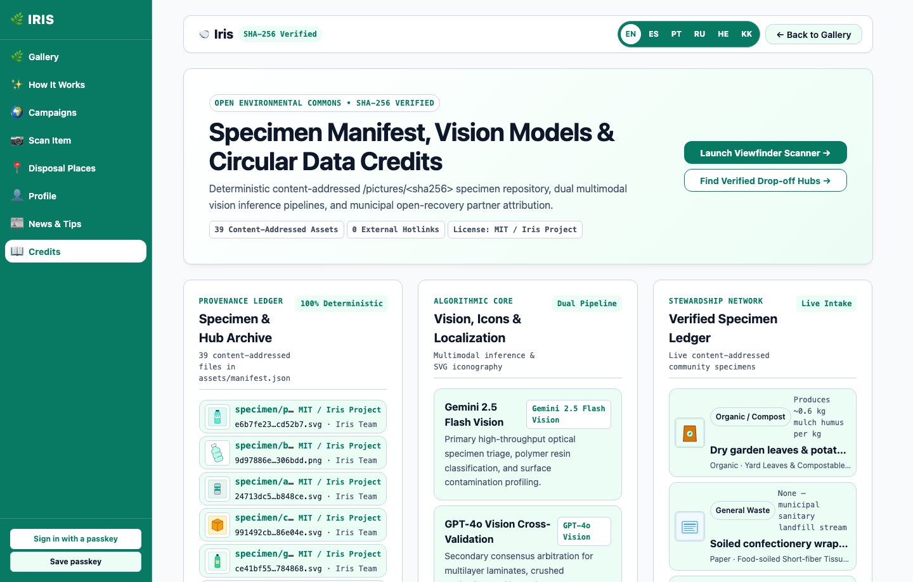
The /credits Open Specimen & Environmental Attribution Ledger showing the 39 content-addressed /pictures/<sha256> assets, vision model cards, 6-locale matrix, and live specimen ledger.
What the gates and the seats said
All five verbs (generate, lint, build, test, integrate@host) exit 0 with tests/pictures.test.ts passing all 4 checks and check-visual: no critical findings; 0 advisory across all 9 routes and 4 viewports. Studio review seats (product, architect, engineer, qa) approved Turn 20 with zero open findings.
Turn 19 realizes #accept-six-locales-rtl across all six locale catalogues (messages/{en,es,pt,ru,he,kk}.json) and all ten authored stylesheets, guided by the Stitch visual reference at docs/mockups/stitch/credits-and-dark-rtl.png. Converting physical horizontal CSS declarations in shell/shared/chrome.css to logical inline properties (inset-inline-start: 0, border-inline-end, margin-inline-start: var(--size-13)) and declaring [dir="rtl"] / [data-lang="he"] bidi isolation in shell/shared/iris.css mirrors the desktop sidebar rail, topbar switcher, 4-card impact ribbon, and split-pane workspaces cleanly under /he, while tests/catalogues.test.ts (registered under loop.surface.checks.catalogues) verifies key-set parity, target-script translations, {msg.*} resolution, and zero physical left/right CSS properties.
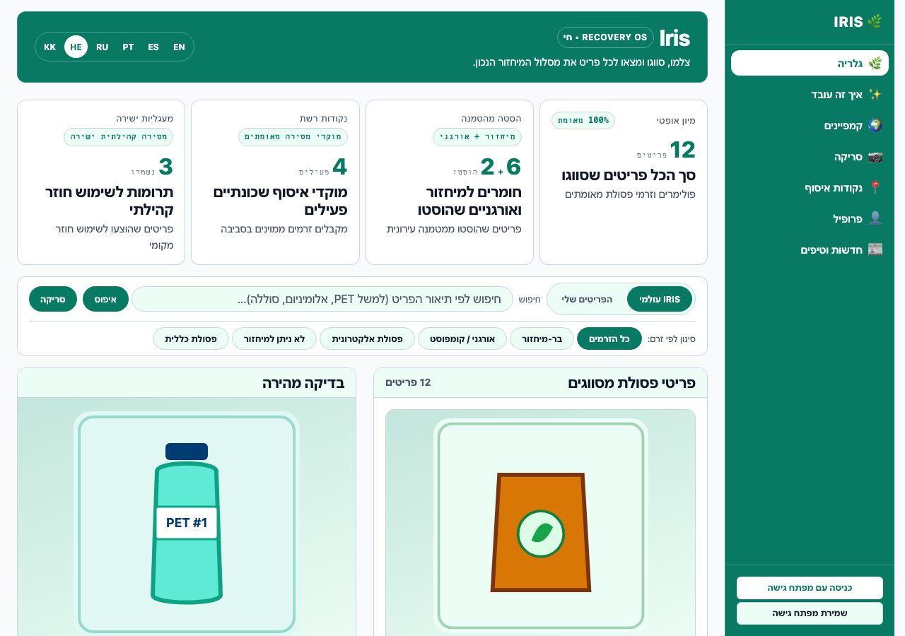
The /he Hebrew gallery workspace rendered right-to-left (dir="rtl") with the desktop sidebar rail docked on the inline-start (right) edge and mirrored impact and specimen grids.
What the gates and the seats said
All five verbs (generate, lint, build, test, integrate@host) exit 0 with tests/catalogues.test.ts passing all 4 checks and check-visual: no critical findings; 0 advisory. Studio review seats (product, architect, engineer, qa) approved Turn 19 with zero open findings.
Dark appearance parity (`light-dark()` tokens, WCAG AA contrast >= 4.5:1) and zero-literal stylesheet audit (`tests/appearance.test.ts`)
Turn 18 enforces #accept-dual-appearance and #test-dual-appearance with a mechanical Deno audit suite (tests/appearance.test.ts, registered under loop.surface.checks.appearance in program.cue), guided by the Stitch visual reference at docs/mockups/stitch/credits-and-dark-rtl.png. Every colour token in DESIGN.md and shell/design.css carries a light-dark() pair meeting WCAG 2.1 AA contrast (>= 4.5:1) across all ten foreground/background pairs in both light and dark modes, shell/shared/iris.css declares --font-mono on :root so every custom property across all ten authored screen and shared stylesheets resolves cleanly with zero raw hex or functional (rgb/hsl/oklch) colour literals, and all eight screens declare populated-dark storyboard frames.
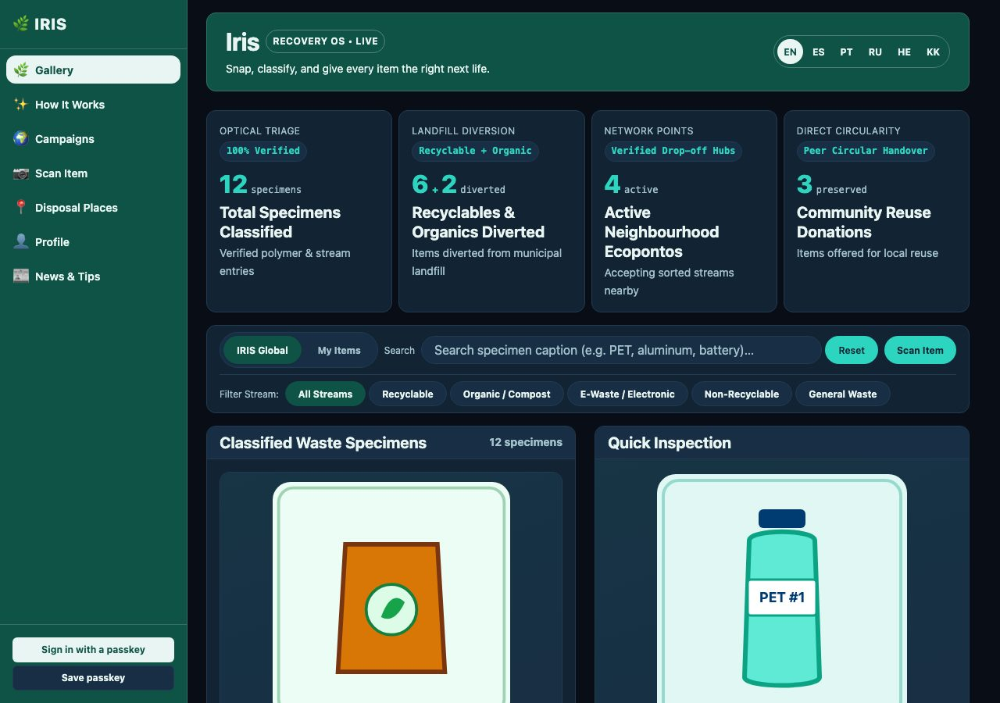
The / gallery workspace rendered in dark appearance (color-scheme: dark) with deep forest-teal chrome, slate-navy panels, and luminous mint-teal impact metrics.
What the gates and the seats said
All five verbs (generate, lint, build, test, integrate@host) exit 0 with tests/appearance.test.ts passing all 3 checks and check-visual: no critical findings; 0 advisory. Studio review seats (product, architect, engineer, qa) approved Turn 18 with zero open findings.
Container-query responsive geometry (`390px`, `768px`, `1280px`), 44px touch targets, layout-shift guards, and zero focus-order jumps
Turn 17 opens Sprint 5 by enforcing #accept-responsive-geometry across all eight screens (gallery, detail, intro, landing, camera, places, profile, news), guided by the Stitch visual reference at docs/mockups/stitch/credits-and-dark-rtl.png. Every screen stylesheet declares container-type: inline-size and @container responsive rules with min(100%, ...) grid tracks and --control-h / --control-h-sm touch targets, every <img> element across all eight templates carries explicit width and height layout-shift guards, and /camera places all interactive controls inside .camera-submit-column so keyboard focus progresses monotonically top-to-bottom across every viewport.
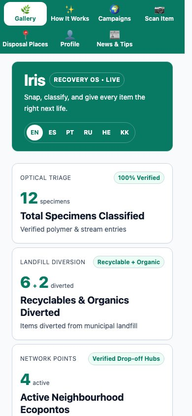
The / gallery workspace rendered on a 390×844 mobile viewport with the responsive icon-tab navigation strip and stacked impact cards.
What the gates and the seats said
All five verbs (generate, lint, build, test, integrate@host) exit 0 with check-visual: no critical findings; 0 advisory across all 8 routes and all 4 viewports (phone, tablet, laptop, desktop). Studio review seats (product, architect, engineer, qa) approved Turn 17 with zero open findings.
Sprint 4 (Turns 13–16) completes all interactive feature, telemetry, governance, and offline-sync workflows across Iris's eight mounted screens: live specimen caption search and 6-pill waste-stream filtering on / (Turn 13), the 4-card sustainability impact ribbon on / and Network Sustainability Impact panel on /profile (Turn 14), checkbox-confirmed content moderation (flag-item) and owner-only two-tap <details> specimen/request removal (delete-item, delete-request) across /images/:id and / (Turn 15), and live 4-phase sync counters (submitted, synced, classifying, classified) with offline outbox durability guidance on / and /camera (Turn 16).
What the Sprint 4 wrap seats said
Both Sprint 4 wrap reviewers (product and architect) approved with zero open findings across all 16 entities, 8 screens, 7 pure Jessie handlers, 10 mutation flows, and 27 acceptance checks.
Four-phase sync telemetry (`submitted`, `synced`, `classifying`, `classified`) and offline outbox durability cues on `/` and `/camera`
Turn 16 completes Sprint 4 by adding live 4-phase sync telemetry and offline outbox recovery cues (#accept-sync-telemetry) across / (shell/screens/gallery.html, shell/screens/gallery.css) and /camera (shell/screens/camera.html, shell/screens/camera.css), guided by the Stitch visual reference at docs/mockups/stitch/moderation-and-sync-telemetry.png. Both the Recent Classification Pipeline on / and the Recent Classification Queue on /camera bind live data-project='{"n":"count"}' projections over TrackRequest for each phase (status=eq.submitted, status=eq.synced, status=eq.classifying, status=eq.classified) alongside localized offline-first Electric shape reconciliation notes and screen-level p.offline banners.
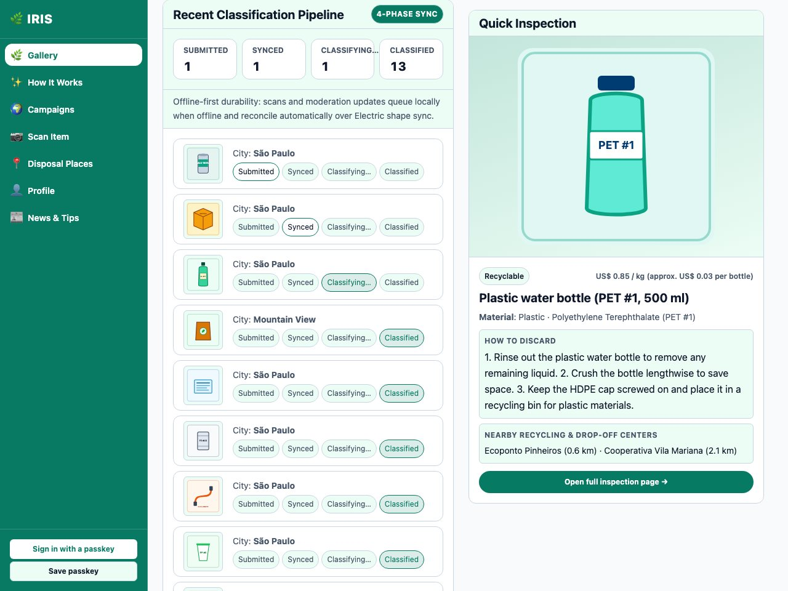
The Recent Classification Pipeline on / displaying live 4-phase sync counters (Submitted 1, Synced 1, Classifying… 1, Classified 13) and the offline-first durability cue.
What the gates and the seats said
All five verbs (generate, lint, build, test, integrate@host) exit 0 with zero critical visual findings across all viewports. Studio review seats (product, architect, engineer, qa) approved Turn 16 with zero open findings.
Community content governance (`flag-item`) and owner-only two-tap `` deletion (`delete-item`, `delete-request`)
Turn 15 adds community content moderation and owner-only two-tap specimen/request deletion (#accept-moderation-delete) across /images/:id (shell/screens/detail.html, shell/screens/detail.css) and / (shell/screens/gallery.html, shell/screens/gallery.css), guided by the Stitch visual reference at docs/mockups/stitch/moderation-and-sync-telemetry.png. On /images/:id, the side-by-side Content Governance and Owner Specimen Control panels pair a checkbox-confirmed moderation form (flag-item, backed by trash_item_app_user_update with WITH CHECK (tagged_as_inappropriate = true) in 011_owner_writes.sql) with a two-tap <details> permanent delete flow (delete-item, backed by trash_item_app_user_delete and cascade_trash_item_children()), while My Scan Requests on / offers a matching two-tap <details> delete flow (delete-request).
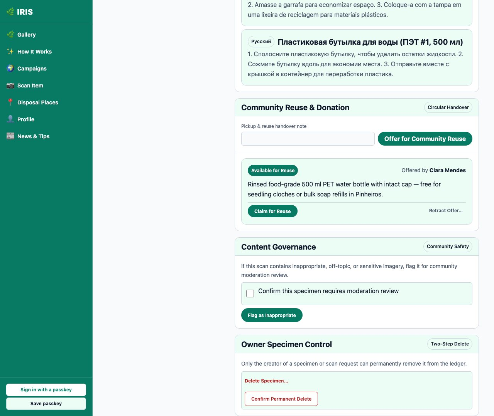
The Content Governance (flag-item) and Owner Specimen Control (two-tap delete-item) panels on /images/:id.
What the gates and the seats said
All five verbs (generate, lint, build, test, integrate@host) exit 0 with zero critical visual findings across all viewports. Studio review seats (product, architect, engineer, qa) approved Turn 15 with zero open findings.
Live four-card sustainability impact ribbon on `/` and Network Sustainability Impact panel on `/profile`
Turn 14 adds live sustainability impact counters (#accept-impact-counters) across / (shell/screens/gallery.html, shell/screens/gallery.css) and /profile (shell/screens/profile.html, shell/screens/profile.css), guided by the Stitch visual reference at docs/mockups/stitch/gallery-search-and-impact.png. Four bento cards above the gallery workspace and a companion Network Sustainability Impact panel on /profile bind declarative data-project='{"n":"count"}' tallies over TrashItem, DisposalPlace, and Donate: Total Specimens Classified (12), Recyclables & Organics Diverted (6 + 2), Active Neighbourhood Ecopontos (4), and Community Reuse Donations (3).
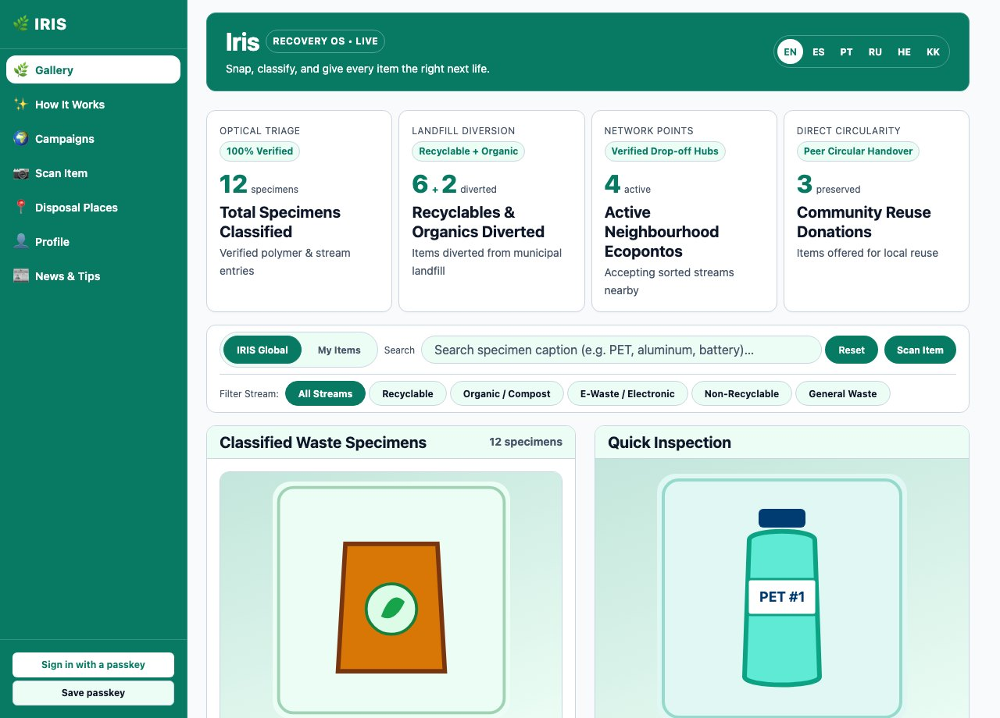
The / gallery workspace displaying the 4-card Sustainability Impact Ribbon above the search and waste-stream filter toolbar.
What the gates and the seats said
All five verbs (generate, lint, build, test, integrate@host) exit 0 with zero critical visual findings across all viewports. Studio review seats (product, architect, engineer, qa) approved Turn 14, and check-visual.ts caught a dark-mode contrast issue on .impact-num (switching from var(--header) to var(--accent) for WCAG AA parity in both appearances).
Live specimen caption search (`ilike`) and 6-pill waste category filter bar on `/`
Turn 13 opens Sprint 4 by extending GalleryView with gap-free ordinals 4: category ('all', 'recyclable', 'organic', 'eletronic', 'non_recyclable', 'trash') and 5: query (this.size() <= 80), guided by the Stitch visual reference at docs/mockups/stitch/gallery-search-and-impact.png. On / (shell/screens/gallery.html, shell/screens/gallery.css, shell/handlers/gallery_view.js), the workspace bar now features a live search box (#gallery-search with data-on-input="gallery_view" and #search-clear reset) that filters trash_item via caption=ilike.*{query}* alongside six waste-stream filter chips (#cat-all..#cat-trash) that filter both the community and personal specimen grids in place.
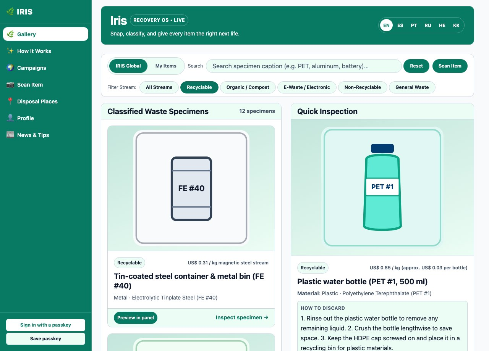
The / gallery workspace with the live specimen search input (#gallery-search), #search-clear reset, and 6-pill waste category filter bar driven by GalleryView and gallery_view.js.
What the gates and the seats said
All five verbs (generate, lint, build, test, integrate@host) exit 0 with zero critical visual findings across all viewports. Studio review seats (product, architect, engineer, qa) approved Turn 13; product noted that #cat-all initially referenced {msg.places_filter_all} instead of {msg.places_stream_all}, which was fixed in this turn.
Sprint 3 complete: Neighbourhood places directory, Community Reuse & Donate flow, Steward Profile, and Circular Dispatches & Field Guide
Sprint 3 (Turns 9–12) expands Iris from specimen scanning and classification into a complete neighbourhood circular-recovery companion across eight mounted routes (/, /images/:id, /intro, /lp, /camera, /places, /profile, /news), unified by the Botanical Authority design revamp (iris.cleaning + Stitch references in docs/mockups/stitch/) and the on-demand six-locale topbar switcher (LocalizedItem). Readers can now browse and register neighbourhood drop-off bins on /places, offer/claim/retract reusable items on /images/:id and /places, configure doorstep collection coordinates and AI vision preferences on /profile, and filter multilingual circular dispatches alongside a 3-step sorting & photography manual on /news.
What the Sprint 3 wrap seats said
Both Sprint 3 wrap reviewers (product and architect) approved with zero open findings across all 15 entities, 8 screens, 7 pure Jessie handlers, and 23 acceptance checks.
Multilingual circular dispatches feed, 7-pill language filter bar, and 3-step sorting & photography field guide (/news)
Turn 12 completes Sprint 3 with the /news circular dispatches and sorting tips workspace (shell/screens/news.html, shell/screens/news.css, shell/handlers/news_view.js), guided by the Stitch visual reference at docs/mockups/stitch/recycling-news-and-tips.png. The tab-durable NewsView entity (id = 'view', lang in ['all', 'en', 'es', 'pt', 'ru', 'he', 'kk']) and pure Jessie reducer news_view.js let readers filter the seven seeded NewsItem dispatches across all six supported languages in place (with RTL text directionality on Hebrew dispatches), while the sticky right-hand Field Guide: Sorting & Photography operator manual presents three essential sorting and photography protocols with direct CTAs to /camera and /places.
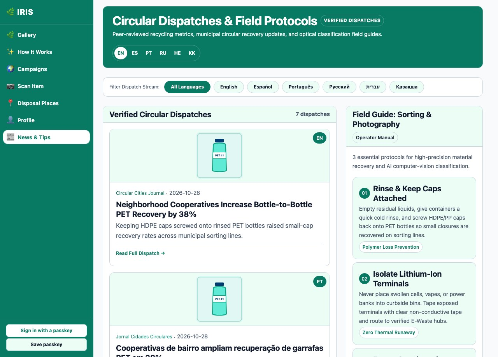
The /news workspace showing the 7-pill language filter bar, the Verified Circular Dispatches grid across all six languages, and the sticky 3-step Field Guide: Sorting & Photography manual.
What the gates and the seats said
All five verbs (generate, lint, build, test, integrate@host) exit 0 with zero critical visual findings across all viewports. Studio review seats (product, architect, engineer, qa) approved Turn 12; engineer flagged two items (using {msg.lang_en}..{msg.lang_kk} on the filter pills and var(--size-1) in news.css), and the 390px phone visual check caught a `minmax(var(--size-14), 1fr)` grid column width that was tightened to `minmax(min(100%, var(--size-14)), 1fr)`, all fixed in this turn.
Steward identity card, live handover coordinates, and doorstep collection & AI preferences (/profile)
Turn 11 adds the /profile steward identity and collection settings workspace (shell/screens/profile.html, shell/screens/profile.css), guided by the Stitch visual reference at docs/mockups/stitch/profile-settings.png. Scoping AppUser (id=eq.{id}) inside Me binds the signed-in steward's identity card with live contribution tallies across TrashItem, Donate, and DisposalPlace, displays live handover coordinates and the doorstep specimen protocol on the left column, and provides the update-profile form on the right column to update display_name, home_address, address_complement, phone_number, and preferred_model (gemini or openai) under app_user_app_user_update. Newly provisioned guest accounts receive deterministic default collection settings via app_user_defaults() in 013_me_provision.sql.
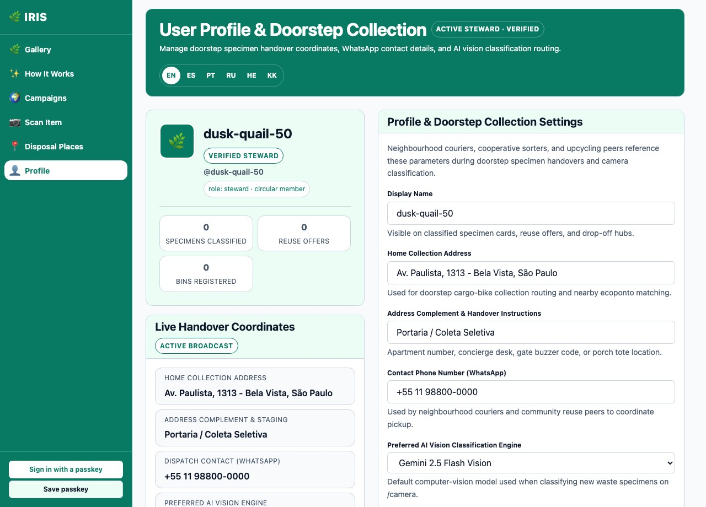
The /profile workspace showing the Steward Identity Card, live contribution counters, Live Handover Coordinates, and the update-profile collection & AI preferences form.
What the gates and the seats said
All five verbs (generate, lint, build, test, integrate@host) exit 0 with zero critical visual findings across all viewports. Studio review seats (product, architect, engineer, qa) approved Turn 11; architect and engineer flagged three minor items (aligning #profile Reads and #test-profile-settings in ir.html with profile.html and program.cue, and adding class="tally" on the three count projections), all fixed in this turn.
Community Reuse & Donation workflow (offer, claim, two-tap retract) on /images/:id and /places
Turn 10 brings circular community reuse into Iris across /images/:id (shell/screens/detail.html, shell/screens/detail.css) and /places (shell/screens/places.html, shell/screens/places.css), guided by the Stitch visual reference at docs/mockups/stitch/specimen-detail-donate.png. On /images/:id, the Community Reuse & Donation panel lets an item's owner post a pickup & condition note via offer-donation (backed by sync_donate_offer() in 011_owner_writes.sql), displays live reuse offers with donor attribution and localized status badges (Available for Reuse vs Claimed by Neighbor), lets signed-in neighbours reserve an available offer in one tap via claim-donation, and provides a two-tap <details> retraction flow (retract-donation). On /places, the Community Reuse & Donation Board surfaces active neighbourhood reuse offers with direct links to /images/:item_id.
The Community Reuse & Donation panel on /images/:id with the offer-donation form and live reuse card (claim-donation + two-tap <details>retract-donation).
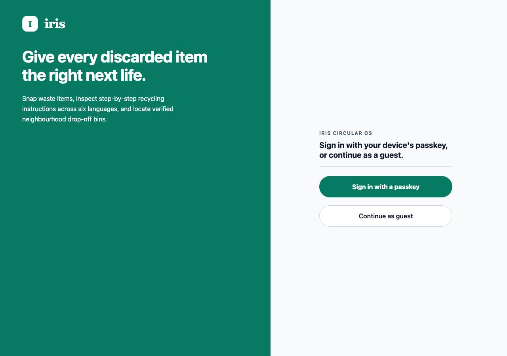
The Community Reuse & Donation Board on /places surfacing neighbourhood reuse offers alongside verified drop-off hubs.
What the gates and the seats said
All five verbs (generate, lint, build, test, integrate@host) exit 0 with zero critical visual findings across all viewports. Studio review seats (product, architect, engineer, qa) approved the Donate create/claim/retract flows, RLS boundaries, and idempotent sync_donate_offer() trigger.
Neighbourhood drop-off directory (/places), bin registration form, Stitch/iris.cleaning design revamp, and LocalizedItem locale switcher
Turn 9 opens Sprint 3 with the /places neighbourhood drop-off directory and bin registration workspace (shell/screens/places.html, shell/screens/places.css, shell/handlers/places_view.js), alongside a design-system revamp inspired by iris.cleaning and Stitch mockups (docs/mockups/stitch/) and an on-demand topbar language switcher modeled after apps/snapcards (LocalizedItem + shell/handlers/localize_content.js). On /places, readers filter verified drop-off hubs by waste stream via PlacesView and register new neighbourhood bins through the register-place create form on DisposalPlace, backed by sync_disposal_place_defaults() in 011_owner_writes.sql.
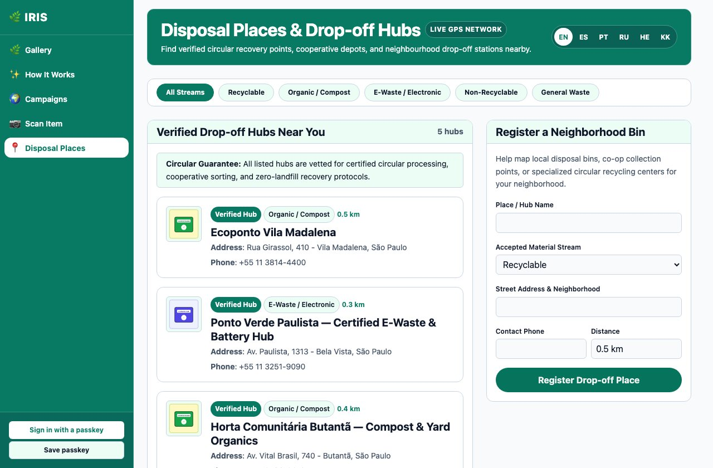
The /places directory after registering Ecoponto Vila Madalena (Organic / Compost): sync_disposal_place_defaults() assigns material_key = 'cat_organic' and the organic stream icon automatically.
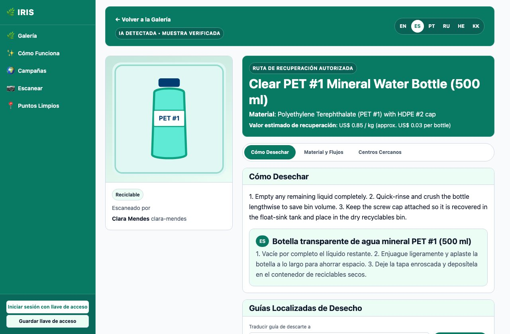
Switching to ES in the topbar updates the UI chrome to Spanish and projects the localized specimen caption and disposal steps into LocalizedItem via localize_content.js.
What the gates and the seats said
All five verbs (generate, lint, build, test, integrate@host) exit 0 with zero critical visual findings across all viewports. Studio review seats (product, architect, engineer, qa) approved the /places directory, register-place flow, LocalizedItem projection, and iris.cleaning design revamp.
Sprint 2 shipped: /camera viewfinder, pure Jessie GIoU segmentation, 015_classify_request.sql & 016_translate_item.sql triggers, 18 acceptance checks green
Cost: 4 turns (4 engineer-weeks, Turns 5–8), 0 open defects across per-turn and cross-turn product / architect / engineer / qa seats, 0 declined dispositions, zero escape hatches (capabilities.hatches: {}), all 18 acceptance ledger checks walked end-to-end against the live stack (#accept-door through #accept-translation-trigger). Next sprint plan (Sprint 3, 4 engineer-weeks): Turn 9 (/places Disposal Places directory + register-place create form on DisposalPlace), Turn 10 (Donate reuse offers on /images/:id: offer-donation create, claim-donation update, retract-donation delete), Turn 11 (/profile User Profile & Collection Settings screen + update-profile update form on AppUser), Turn 12 (/news Recycling News & Sorting Tips screen with NewsView language filter over NewsItem).
On-demand multilingual disposal guide translation (016_translate_item.sql) on /images/:id
Turn 8 completes the multilingual translation pipeline with services/database/sql/016_translate_item.sql and the request-translation create form on /images/:id (shell/screens/detail.html). Selecting any of the five non-English target languages (es, pt, ru, he, kk) and clicking Translate Guide inserts a TranslationRequest row owned by auth_uid(), firing the AFTER INSERT ON translation_requestSECURITY DEFINER trigger translate_trash_item(), which upserts a localized TrashItemTranslation row keyed by (item_id, language) using NEW.id and NEW.created_at and streams the new guide immediately to the How to Discard tab.
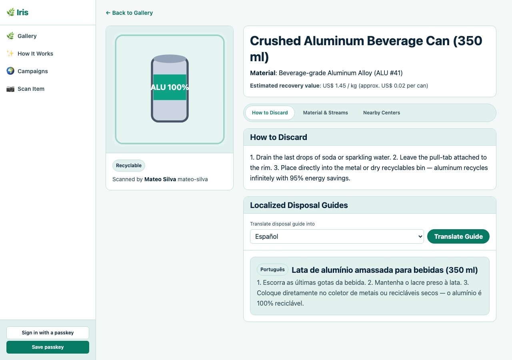
Before requesting a translation on Crushed Aluminum Beverage Can (350 ml): only the seeded Português guide is present below the request-translation form.
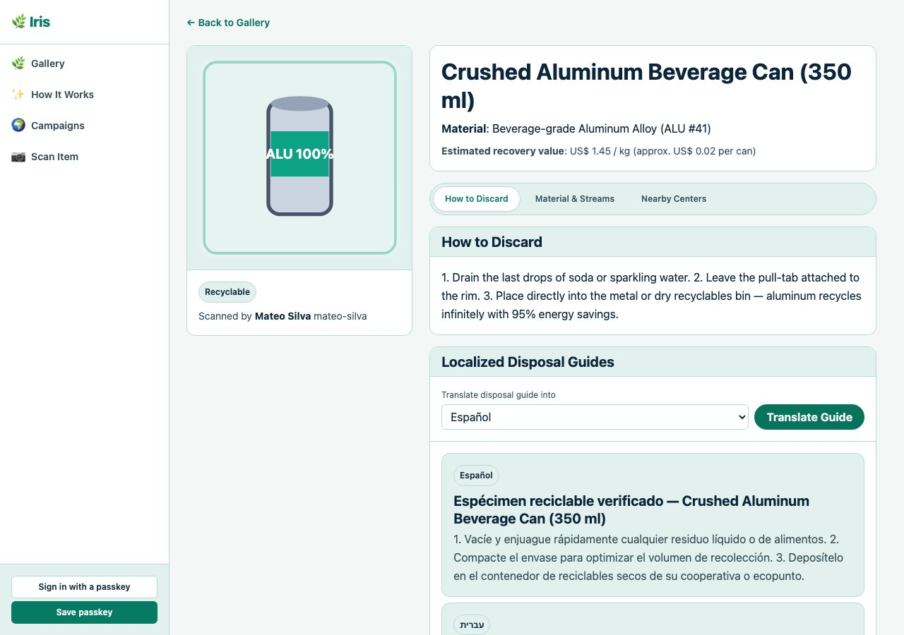
Clicking Translate Guide for Español fires 016_translate_item.sql and streams the new Spanish disposal guide immediately into the list.
What the gates and the seats said
All five verbs (generate, lint, build, test, integrate@host) exit 0 with zero critical visual findings across all viewports. Studio review seats (product, architect, engineer, qa) approved the request-translation flow, idempotent (item_id, language) upsert, and recorded-input compliance.
Synchronous specimen classification trigger (015_classify_request.sql) and refined sidebar/tab navigation
Turn 7 wires the end-to-end camera-to-gallery loop with services/database/sql/015_classify_request.sql: an AFTER INSERT ON track_request PL/pgSQL SECURITY DEFINER trigger that deterministically classifies each submitted scan by specimen image into one of Iris's five waste streams (recyclable, organic, eletronic, non_recyclable, trash), inserts an idempotent TrashItem row keyed by request_id = NEW.id::text with rich material, recovery value, and disposal guidance, and promotes the TrackRequest row to status = 'classified'. We also refined the application navigation in shell/shared/chrome.css and DESIGN.md to follow snapcards.fun and iris.cleaning: a fixed left sidebar rail with route icon pills and bottom-anchored account controls on desktop (>=860px) and a compact equal-width icon-tab strip on mobile (<860px).
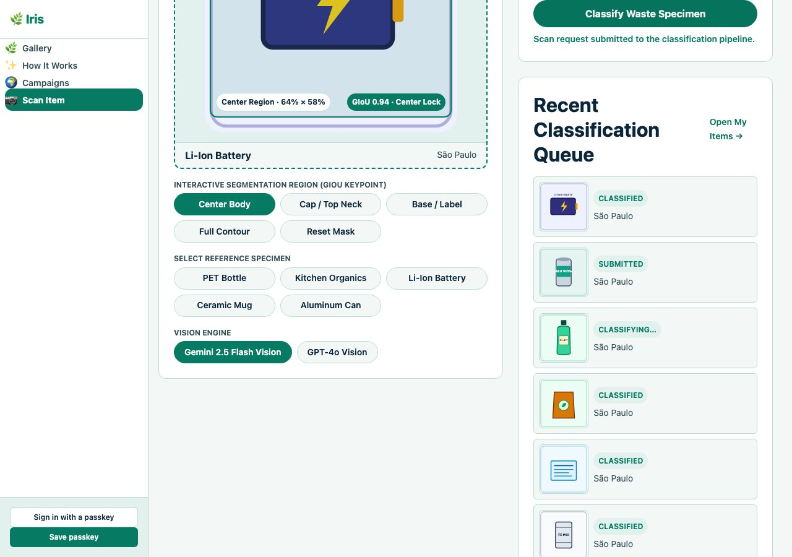
Submitting a Li-Ion Battery scan on /camera immediately runs 015_classify_request.sql and marks the queue item CLASSIFIED.
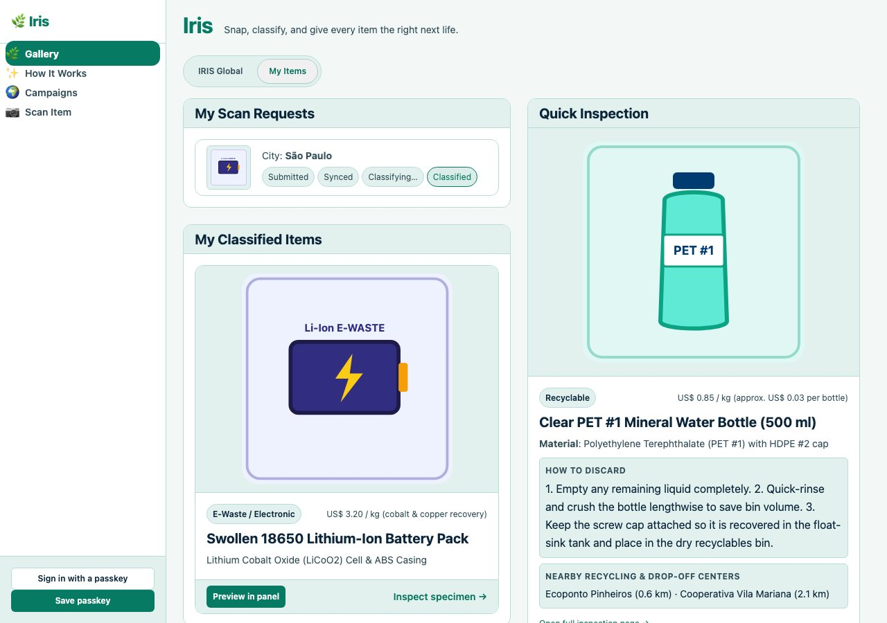
Switching to My Items on / reveals the newly promoted Swollen 18650 Lithium-Ion Battery Pack specimen card synced via Electric.
What the gates and the seats said
All five verbs (generate, lint, build, test, integrate@host) exit 0 with zero critical visual findings across all viewports. Studio review seats (product, architect, engineer, qa) approved the deterministic trigger, recorded-input compliance, and navigation rail.
Interactive GIoU keypoint segmentation overlay and cover-crop telemetry on /camera
Turn 6 ports Iris's interactive specimen segmentation geometry (cropToCover viewport normalization and computeGIoU Generalized Intersection over Union scoring) directly into the pure Jessie scan_draft compartment over ScanDraft state (zero escape hatches). On /camera, the viewfinder overlays a live bounding-box reticle and GIoU telemetry badges over the specimen and lets the reader switch between four keypoint regions (Center Body, Cap / Top Neck, Base / Label, Full Contour) or reset the mask.
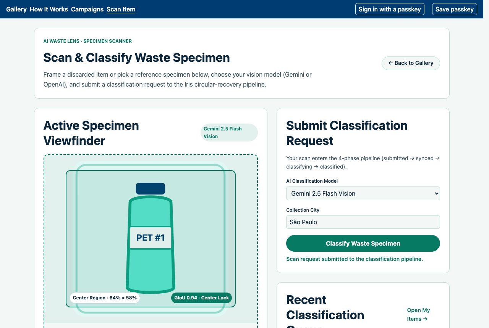
Initial segmented state on /camera locking onto the specimen's center body (GIoU 0.94 · Center Lock).
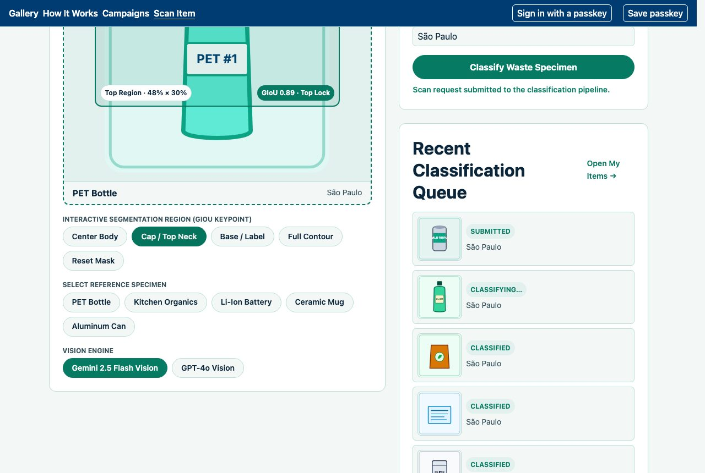
Selecting Cap / Top Neck shifts the segmentation reticle to the top region (GIoU 0.89 · Top Lock) and highlights the active region chip.
What the gates and the seats said
All five verbs (generate, lint, build, test, integrate@host) exit 0 with zero critical visual findings across all viewports. All four studio review seats (product, architect, engineer, qa) approved the pure Jessie computeGIoU / cropToCover reducer and #decision-escape-hatches.
Waste specimen viewfinder (/camera), AI vision engine switcher, and live TrackRequest submission
Turn 5 introduces the /camera scan screen powered by the tab-durable ScanDraft entity (id = 'draft'), the pure Jessie handler shell/handlers/scan_draft.js, and the submit-scan create form on TrackRequest. On the left, the active specimen viewfinder displays the selected specimen's illustration, localized name, and vision model badge alongside five reference specimen presets (PET Bottle, Kitchen Organics, Li-Ion Battery, Ceramic Mug, Aluminum Can) and quick pills for Gemini 2.5 Flash Vision and GPT-4o Vision. On the right, submitting the form creates a TrackRequest row owned by auth_uid() and immediately updates the live 4-phase classification queue below.
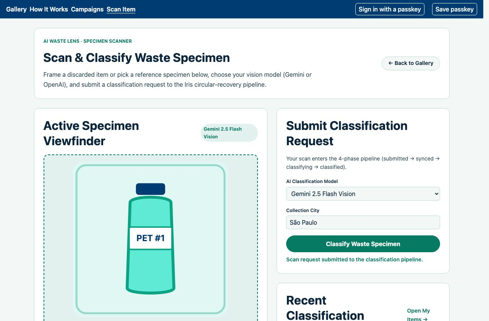
The /camera workspace in its initial seeded state with the PET Bottle specimen and Gemini 2.5 Flash Vision active.
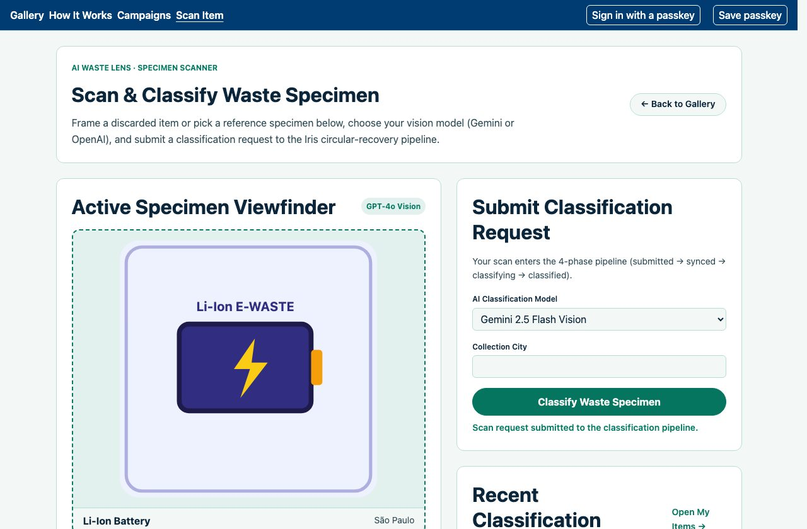
After selecting Li-Ion Battery and GPT-4o Vision and submitting, the new TrackRequest appears immediately at the top of the live classification queue.
What the gates and the seats said
All five verbs (generate, lint, build, test, integrate@host) exit 0 with zero critical visual findings across phone, tablet, laptop, and desktop viewports. Studio review seats (product, architect, engineer, qa) verified the ScanDraft state fold, submit-scan form flow, and contrast tokens.
Cost: 4 turns (4 engineer-weeks), 0 open defects across per-turn and cross-turn product / architect / engineer / qa seats, 0 declined dispositions, all 14 acceptance ledger checks walked end-to-end against the live stack (#accept-door through #accept-dual-appearance). Next sprint plan (Sprint 2, 4 engineer-weeks): Turn 5 (/camera scan screen with ScanDraft + TrackRequest create form), Turn 6 (camera-capturehost-dom segmentation hatch), Turn 7 (015_classify_request.sql synchronous classification trigger), Turn 8 (on-demand TranslationRequest form + 016_translate_item.sql multilingual trigger).
Three-step onboarding walkthrough (/intro) and Iris Campaigns showcase (/lp)
Turn 4 adds the /intro onboarding walkthrough and /lp campaign showcase matching iris.cleaning/intro and iris.cleaning/lp. On /intro, the tab-durable OnboardingStep entity (id = 'step') and pure Jessie handler shell/handlers/onboarding_step.js drive a three-segment progress bar and three illustrated slides explaining Iris's circular-recovery mission, point-to-point neighbourhood collection, and cell-phone camera scanning, with Next, Skip, and Start Iris now actions into the gallery. On /lp, the deep navy hero banner with the colorful Iris mark introduces the three campaign tracks (Snap & Recycle, Small Choices, Big Impact, and AI for Recycling) alongside live classified community waste specimens.
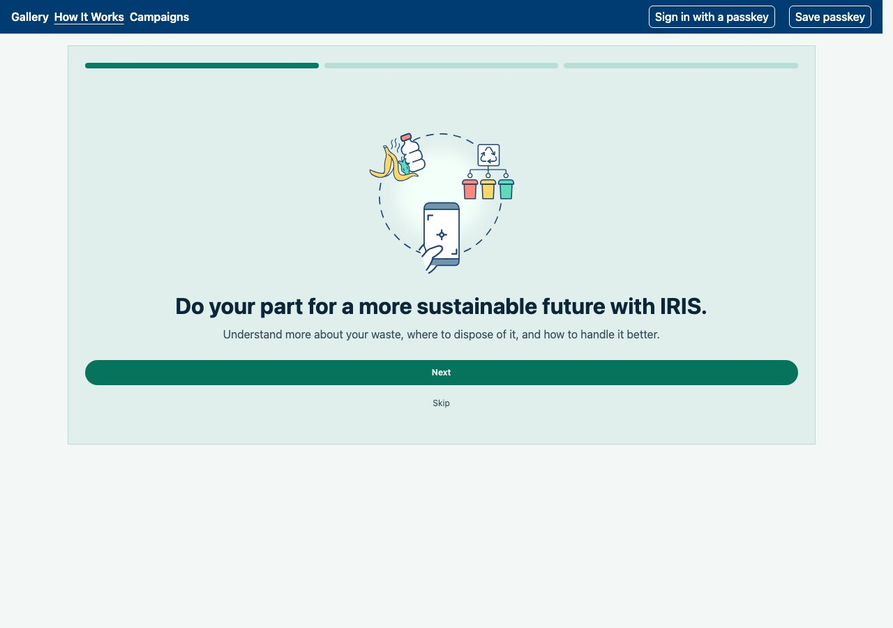
The 3-step onboarding walkthrough on /intro with progress segments, content-addressed stepper artwork, and Next / Skip controls.
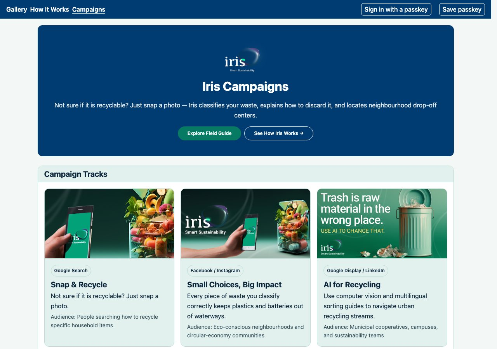
The /lp Iris Campaigns showcase with the deep navy brand hero, three campaign tracks in a three-column grid, and live community specimens below.
What the gates and the seats said
All five verbs (generate, lint, build, test, integrate@host) exit 0. Studio review seats (product, architect, engineer, qa) verified the 3-step onboarding state machine, campaign showcase cards, and responsive top-strip wrapping.
Three-tab specimen inspection with localized disposal guides and matching drop-off hubs
Turn 3 introduces the tab-durable DetailView entity (id = 'view') and pure Jessie handler shell/handlers/detail_view.js on /images/:id so readers can switch in place between How to Discard, Material & Streams, and Nearby Centers. The How to Discard tab pairs the primary disposal steps with a live trash_item_translation list displaying localized captions and instructions across Spanish, Portuguese, Russian, Hebrew (with RTL directionality), and Kazakh. The Nearby Centers tab combines the specimen's summary with a live disposal_place query filtered by the specimen's waste stream (material_type=eq.{label}), rendering each neighbourhood drop-off hub's illustration, category badge, distance, street address, and phone number.
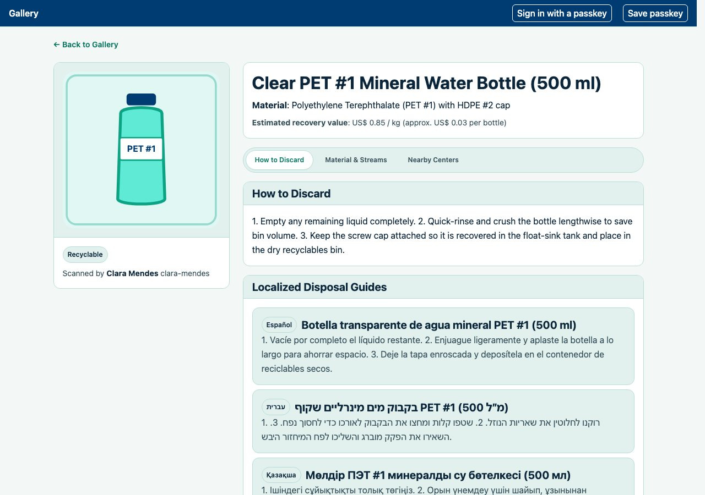
The How to Discard tab on /images/:id displaying numbered disposal instructions and live localized disposal guides across seeded locales.
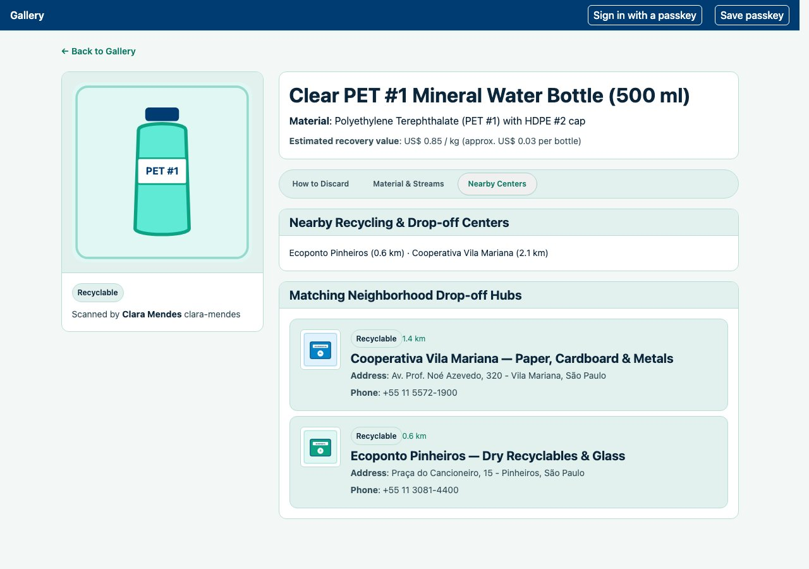
Switching to Nearby Centers reveals live DisposalPlace drop-off hubs filtered by the specimen's waste category (`recyclable`).
What the gates and the seats said
All five verbs (generate, lint, build, test, integrate@host) exit 0. Studio review seats (product, architect, engineer, qa) verified the three-tab detail workspace, RTL bidi directionality on Hebrew translations, and stream-matched drop-off hubs.
Turn 2 adds the tab-durable GalleryView entity (id = 'view') and pure Jessie handler shell/handlers/gallery_view.js so the home gallery switches in place between IRIS Global and My Items without losing scroll position or reloading the page. Each specimen card now carries a Preview in panel button that updates gallery_view.preview_id and swaps the sticky desktop Quick Inspection panel (`data-exit-motion="none"`). Switching to My Items shows the signed-in reader's personal scan queue and classified specimens scoped via Me alongside the live Recent Classification Pipeline with localized four-step phase tracks (Submitted, Synced, Classifying…, Classified).
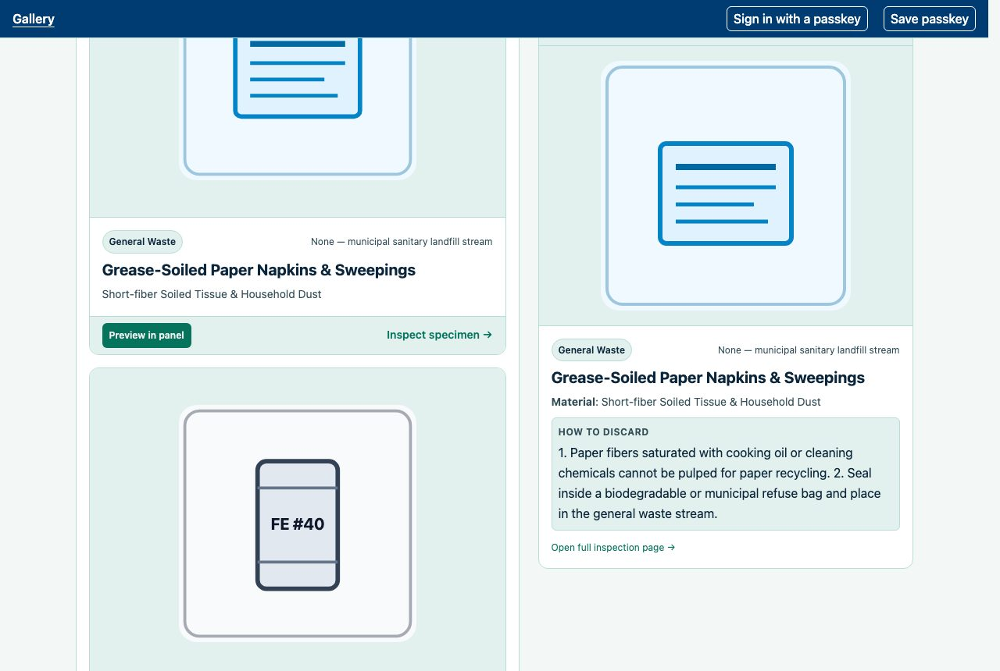
Clicking Preview in panel on the second card swaps the sticky desktop Quick Inspection panel to Grease-Soiled Paper Napkins & Sweepings in place.
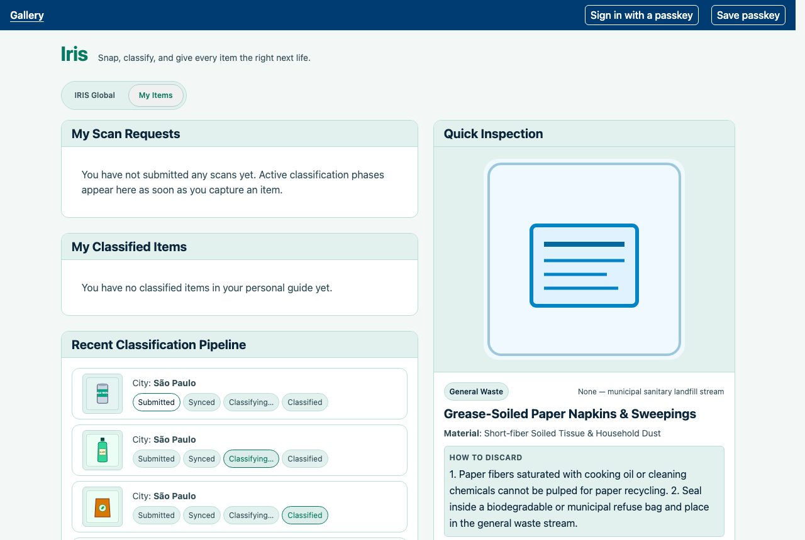
The My Items workspace tab showing personal scan/specimen sections and the live 4-phase classification pipeline (`Submitted`, `Synced`, `Classifying…`, `Classified`).
What the gates and the seats said
All five verbs (generate, lint, build, test, integrate) exit 0. Four seats reviewed Turn 2: product approved with zero findings; architect approved with two low findings (aligning the CEL constraint on GalleryView.id/preview_id in program.cue with ir.html and matching the pipeline TrackRequest read declaration), both fixed; engineer approved with two findings on shell/screens/gallery.css (replacing undefined custom properties with --r-full, --control-h, --surface, and color-mix() over --accent/--link), both fixed; and qa verified acceptance coverage and live browser behaviour.
Nine entities, twelve seeded waste specimens, and the gallery and item detail screens
Turn 1 establishes the domain model (AppUser, Me, TrackRequest, TrashItem, TrashItemTranslation, TranslationRequest, DisposalPlace, Donate, NewsItem), RLS write-protection policies (011_owner_writes.sql through 014_default_privileges.sql), the 12-specimen demo network (020_demo_items.sql) served from content-addressed /pictures/<sha256>.svg assets, six locale catalogues (en, es, pt, ru, he, kk), and the first two screens: Gallery (/) and Item Detail (/images/:id).
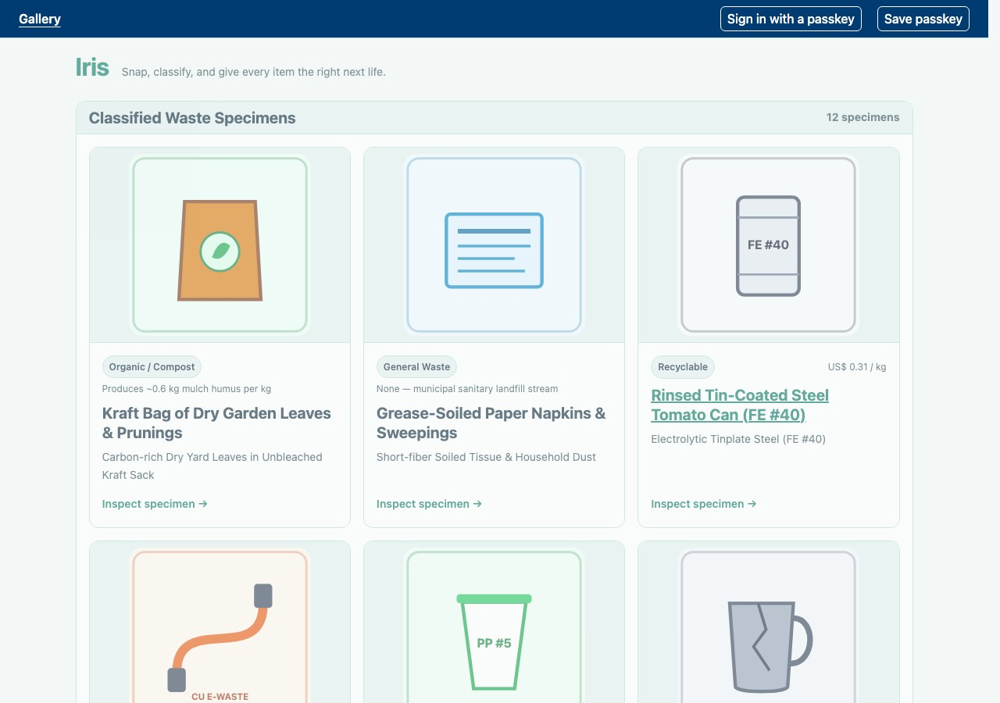
The Gallery after guest sign-in: twelve seeded waste specimens across all five waste categories, served from content-addressed /pictures/ files.
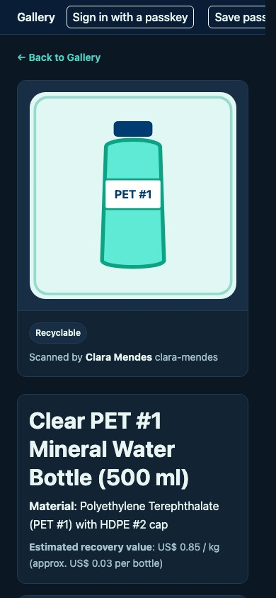
Item Detail at 390px phone width in dark appearance: Clear PET #1 Mineral Water Bottle, contributor attribution, material composition, and recovery value.
What the gates and the seats said
All five verbs (generate, lint, build, test, integrate) exit 0. Four seats reviewed Turn 1, with four findings total and all four fixed in this turn: product and engineer approved with zero findings; architect approved with one medium finding on donate_app_user_insert in 011_owner_writes.sql (now verifying ownership of the referenced trash_item); and qa approved with three findings (seeding a 13th flagged specimen in 020_demo_items.sql to make the moderation filter test non-tautological, expanding test-detail-page field assertions, and compacting the top strip padding at 390px phone width). The live browser playtest also caught and fixed two SVG illustrations with unescaped ampersands in their aria-label attributes.